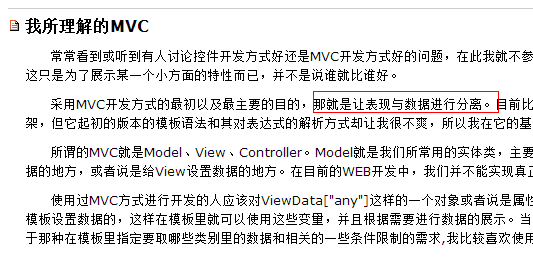
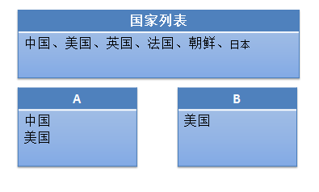

拜师传说
今天老夫拜师了，老夫有幸认识一个JS高手，在此推荐其博客，悄悄告诉你，我拜他为师了，他承诺我只收我一个男弟子。。。。。
师尊刚注册的账号，现在博客数量还不多，但是后面点会有干货哦，值得期待。
http://www.cnblogs.com/aaronjs/
前言
上周回到了成都，这周就准备找工作了，对成都的聚美优品其实比较有好感的，所以昨天就先去面试了，感觉技术面试的还不错啦，结果最后HR说经理不在，让我等经理反馈。
我当时相信了，但是回来想想感觉可能失败了，但是我不知道哪里出了问题。
现在遇到的前端面试都大同小异的，具体的题目就不列出来了，因为泄露公司机密不太好，我就说说自己印象比较深刻的一些东西吧。
今天发生了一次电话面试，下午参加了一家公司的面试，感觉公司还是很有发展潜力的，比较靠谱，若是有后文应该会选择吧。
回到家中后，有两件事一直放在心中，第一个就是昨天为什么失败了，另一个就是我那抄袭的简历啦。。。。
话说简历抄袭
我简历上面抄了一段话：对表现与数据分离有一定了解！
于是上午就被人问到了，并且那位大哥还把工作中遇到的一个问题与我交流了一番（问题等下提出），当时我对这块的理解其实比较模糊，然后就给绕过去了。
于是上午就一直觉得有件事情堵得慌，到下午面试结束后，确实忍不住了，我们一起来看看这个问题吧！
什么是表现与数据分离
我一来就看了一篇文章，点进去一看结果说的是表现与结构分离，其大意是：
表现应该由CSS来控制，结构应该由html来控制，比如我们伟大的禅意花园。
于是我觉得，我简历是不是应该改成，表现与结构分离呢。。。。
但是我感觉表现与数据分离还是有点道理呢，所以我们还是回到我们的表现与数据分离吧。
----------华丽的分割线----------
半个小时过去了，我去查询了资料也去请教了前辈，最后得出了两个东西：
MVC
MVVM
很显然，他们说的这个也许是我找寻的答案，但是我心里面视乎并不买账，于是我找寻了以后截了一个图：

这是一个搞后端的大哥写的博客，我们看到采用MVC开发的主要目的就是表现与数据分离。
看来真的就是MVC啦。。。
好了，这个地方暂时打住，我们来看看当时的原话
模拟面试
面试官问我，说简历上写的对表现与数据分离有一定理解，可以描述一下么
我很淡定的说了句让我思考下，然后开始搜索着我的大脑硬盘，好像压根就没有这个词呢，于是胡乱蒙了个是不是html与css应该分离？
答案当然是否定的，然后面试哥把他在项目中遇到的一个问题抛了出来：
他有一个国家列表，现在要将国家列表放到A中，然后B可以由A选择，也可以有总列表选择
但是B中添加后，若是A中没有要动态为A增加这项。
为了方便各位理解，我上个图

不知道各位听到这个题作何感受，我当时其实就有一种方式可以实现（最简单，最土的），压根就没有想到这个题会和“表现与数据分离”有关系。
但是既然问到了，应该还是有联系吧，不知道各位怎么看待呢？
于是我们回到问题本身吧
再论行为与数据分离
我们工作中可能会碰到这种情况，美工每次拿过来的东西感觉都有点不一样，你不能说出有好大的不一样，反正就是有地方不一样。
然后一拿来后整个家伙全部完蛋，js报错啦，为什么报错你们懂的，这里我来现身说法，整一个真实的例子吧
当年我年少轻狂还在索贝时，我们有设计，但是设计同事的CSS很差，给我们的html+css经常有未闭合的标签，经常会出现莫名其妙的双引号。
但是当时我CSS也不好，其它同事完全就是搞后端的，所以在这个情况下我们艰难的做出了我们的第一版产品，与设计图一致（还是在设计的代码上修改的）。
完了领导看了提出了一点修改意见，于是设计同事又改了下图，相信我他只是简单的改了一点东西，然后形成了html交给了我们。。。。
这次拿来后我看到了这次的html结构和上次完全是两码事，而我们的产品又是单页应用，很多地方完全是javascript生成的，或者html标签与data形成了模板，现在要改。。。改毛线啊。。。
为了具体描述我们所遇到的困境我这里详细描述下：
① 我们根据设计第一版图做好了页面
② 页面上有很多应用，是采用类似于js模板化的东西（小的封装的，很戳）
③ 页面根据数据库设计，前端使用js控制页面加载，最后渲染出我们的页面
好了整个代码还有点小复杂，完了现在设计哥来了一个完全不同的结构了，当时内部没有CSS高手，甚至说没有CSS熟手。
我负责改这个工作，我依稀记得我改出了翔。。。。最后终于改完了！
然后根据领导指示，设计同事给出了我们第三套HTML代码，这个和原来的差距相对大一点，但是主要模块还在，于是我看空中到处都是翔了。。。。
我不知道我前面的描述各位遇到过没有，但是当时我没能很好的解决这个问题，就只能缝缝补补的改着，每次出新东西后又是一场悲剧。
回到现实
其实我遇到的这个问题我感觉可以很好的说明表现数据分离的重要性了，但是什么是表现数据分离，我们还是需要将它说清楚啦。
PS：其实我遇到的问题比较复杂吧，我感觉都不完全是表现与数据分离了......
我说不清楚什么是表现与数据分离，那我们举点反例吧：
① 服务器端（php/.net/java），将html标签与数据一起打印出来
Response.Write("<div>......</div>");
这段代码各位一定见过，可以想象，一个系统一年后要改版，这个地方的代码修改可能有点痛苦吧（特别是原来的开发人员不在了）
这个是服务器端的，那么我们的客户端呢（咳咳，让我想想啦，想不到啦。。。）
② 我想到一个例子，不知道合适不，拿出来说说吧
前段时间，我们前端有个地区控件的东西，他大概是这个样子的：
var area = '<table>......</table>';
他在字符串中将所有的地区全部写了出来（包括地区编号（隐藏）），这样做会有问题的：
假设我哪天想改变一下结构适应新的布局（响应式布局神马的随便啦），那么我们会发现无从下手
③ 还是回到我遇到那个问题（重点来了哦）
我遇到那个问题其实主要是我在js中使用的id，或者class或者标签子选择器都不在了，新的代码上来后肯定出错啦。
这个问题很尖锐的，原来我使用了一套html+css页面，我们根据这个写了一大套javascript的东西，耗时3个月。
然后我们换了一套页面，但是其中功能还是我们那套js
然后我们再换了一套页面，其中的js还是我们那套js
最后最变态的要求出来了（因为产品会给不同的电视台使用），我们的产品在不同的人看起来页面是不一样的，但是其中的功能是一样的！！！
屌丝们，接招吧，各位哥哥，你们会怎么解决这个问题呢？
正是因为有上面那种莫名其妙的需求，所以才会出现我们前端MVC这种莫名其妙的东西。。。
因为按道理来说前端是不应该出现MVC的，我们的html就是model，我们的css就是view，我们的js就是controller。
结果现在单是javascript就搞出来了一套MVC，这不坑爹么？
至此，不知道各位对表现与数据分离有新的了解没有？？？
MVC——表现与数据分离
话不多说，先上一段代码（原来的代码，抄过来的）：
1 <html xmlns="http://www.w3.org/1999/xhtml"> 2 <head> 3 <title></title> 4 <script src="../jquery-1.7.1.js" type="text/javascript"></script> 5 <script type="text/javascript"> 6 $(document).ready(function () { 7 var end = $('#end'); 8 $('#pili').change(function () { 9 var name = ''; 10 var p = $(this).val(); 11 if (p == '叶小钗') { 12 name = '刀狂剑痴'; 13 } 14 if (p == '一页书') { 15 name == '百世经纶'; 16 } 17 if (p == '素还真') { 18 name = '清香白莲'; 19 } 20 21 end.html(name + p); 22 }); 23 }); 24 </script> 25 </head> 26 <body> 27 <select id="pili"> 28 <option value="叶小钗">叶小钗</option> 29 <option value="一页书">一页书</option> 30 <option value="素还真">素还真</option> 31 </select> 32 <div id="end"></div> 33 </body> 34 </html>
我们重新看看上面的代码，很简单的逻辑，select改变后变化end的值，好了现在需求发生改变：
① select变成使用input模拟select
② 在手机上还是使用select算了
③ 总会有莫名其妙的需求，这个就是
好吧，现在的代码你该怎么写呢？是不是会写几个代码，或者你压根不知道怎么写呢？？？于是看看我们的MVC的实现吧
PS：代码是我可耻的抄的。。。。但我可是自豪的一个字一个字的敲的哦，窃知识不算偷......
1 <html xmlns="http://www.w3.org/1999/xhtml"> 2 <head> 3 <title></title> 4 <script src="../jquery-1.7.1.js" type="text/javascript"></script> 5 <script type="text/javascript"> 6 $(document).ready(function () { 7 //定义一个controller 8 var piliController = { 9 //选择视图 10 start: function () { 11 this.view.start(); 12 }, 13 //将用户操作映射到模型更新上 14 set: function (name) { 15 this.model.setPerson(name); 16 } 17 }; 18 piliController.model = { 19 piliKV: { 20 '叶小钗': '刀狂剑痴', 21 '一页书': '百世经纶', 22 '素还真': '清香白莲' 23 }, 24 curPerson: null, 25 //数据模型负责业务逻辑和数据存储 26 setPerson: function (name) { 27 this.curPerson = this.piliKV[name] ? name : null; 28 this.onchange(); 29 }, 30 //通知数据同步更新 31 onchange: function () { 32 piliController.view.update(); 33 }, 34 //相应视图对当前状态的查询 35 getPiliAction: function () { 36 return this.curPerson ? this.piliKV[this.curPerson] + this.curPerson : '???'; 37 } 38 }; 39 piliController.view = { 40 //用户触发change事件 41 start: function () { 42 $('#pili').change(this.onchange); 43 }, 44 onchange: function () { 45 piliController.set($('#pili').val()); 46 }, 47 update: function () { 48 $('#end').html(piliController.model.getPiliAction()); 49 } 50 }; 51 piliController.start(); 52 }); 53 </script> 54 </head> 55 <body> 56 <select id="pili"> 57 <option value="叶小钗">叶小钗</option> 58 <option value="一页书">一页书</option> 59 <option value="素还真">素还真</option> 60 </select> 61 <div id="end"></div> 62 </body> 63 </html>
我们来看看这个神一样的代码。。。。我们一开始会认为他有这些问题：
① 代码维护困难，至少我认为很困难
② 徒增复杂性，性能会有问题
③ 我并不能说服自己说自己懂了。。。。
于是我们就放弃了MVC啦，但是我们回过头来好好审视下他，我们会发现不一样的东西：
① 我们好像就在view中使用了选择器获取dom，其它地方压根不认识dom这个丫的。
② 我们的数据似乎在model中，我们可以随意改变，但是并不会影响到我们dom
③ view和model是完全独立的，我们的controller恰好把他们串联起来了
看着这神奇的魔法，我似懂非懂的点了点头，你妹的MVC还真他妈够劲！！！
结语
听我唧唧歪歪说了这么多，不知道各位理解到了表现与数据分离是什么意思没，我感觉自己有所得，所以写出来与各位分享。
这次只是很浅的理解，后面我会请教各位大牛，然后再写一篇心得，希望届时能好好解决这个问题，其中上面面试的问题也一并解答吧，今天暂时到这。
希望这篇博客能对各位有所帮助，当然最重要的是：
哥，有什么想法要说出来哦，不要藏着啊！！！